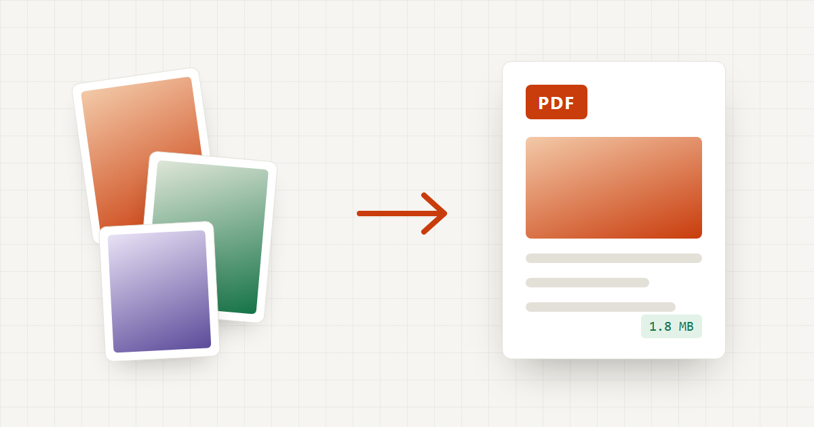

How to Turn Photos into One PDF for Applications and Forms

Job portals, college applications, visa forms, insurance claims and rental agencies all ask for the same thing: "Upload your documents as a single PDF." Most of us don't have a scanner at home. We have a phone full of photos of an ID card, a few certificates and a signed form, and a website that rejects anything over 2 MB.
This guide shows how to turn those photos into one clean, readable PDF that fits the upload limit, without installing an app and without sending your personal documents to a stranger's server.
1. Take photos that read like scans
The PDF can only be as good as the photos you put into it. A minute of care here saves a rejected application later.
- Use daylight, not the flash. Flash causes a bright glare spot, especially on laminated cards and glossy paper. Stand near a window instead.
- Shoot straight down. Hold the phone parallel to the page so the text isn't slanted and the edges stay square.
- Use a dark, plain background. A white page on a dark table makes the edges easy to see and easy to crop.
- Fill the frame. Move close enough that the document takes up most of the photo. Empty table adds file size and makes the text smaller.
- Check before you move on. Zoom in on the photo. If you can't read the smallest line, neither can the person reviewing your form.
Two-sided documents such as ID cards and driving licences usually need both sides. Photograph the back too, even if the form doesn't say so.
2. Put the pages in the right order
Reviewers read the PDF from top to bottom, so order matters. A good default is the order the form lists the documents. If it doesn't list them, use this order:
- Filled-in and signed application form
- Photo ID, front then back
- Proof of address
- Certificates or marksheets, newest first
- Anything else the form asks for
In our Image to PDF tool you can drag the thumbnails into this order and rotate any page that came out sideways before you save.
3. Choose the page size and margins
- A4 (210 × 297 mm) is the standard in India, the UK, Europe and most of the world. Choose it if you are unsure.
- US Letter (8.5 × 11 in) is the standard in the United States and Canada.
- Same as image makes every page exactly the size of its photo. It suits a photo portfolio, but it looks odd when someone prints a form.
A small margin works for most documents: it leaves a white border so nothing touches the edge of the paper when printed. Choose no margin when you have already cropped the photos tightly and want the document as large as possible on the page.
4. Hit the upload limit without making it blurry
Every portal has its own limit, often between 1 MB and 5 MB for the whole file. A modern phone photo can be 3 to 8 MB on its own, so a five-page PDF made from original photos can easily be over 20 MB. The quality setting is how you fix that:
- Original quality keeps photos up to 4000 pixels on the long side with very light compression. Use it when there is no size limit or when someone will print the pages.
- Balanced (recommended) scales each page to at most 2000 pixels on the long side. That is still sharp enough to read small print on screen and on paper, at a fraction of the size.
- Smallest file scales pages to 1400 pixels with stronger compression. Use it when a portal has a strict 1 MB or 2 MB limit.
If the file is still too large, try these in order:
- Crop away the background so only the document is left. Less picture means fewer bytes.
- Drop pages they didn't ask for. A blank back side or a duplicate page only adds weight.
- Shrink the photos first with the Resize Image or Compress Image tools, then build the PDF again.
- Split it into separate uploads if the form has several upload boxes. Our Split PDF tool can do that in seconds.
Always open the final PDF and zoom into the smallest text, such as a date of birth or an ID number. If it's fuzzy, step back up one quality level.
5. Add photos to an existing PDF
Sometimes you already have a PDF, such as a statement downloaded from your bank, and you need to add a photographed page to it. Make a PDF from the photos first, then combine the two files with Merge PDF. You can drag the files into any order before merging. To go the other way and get a single page out as an image, use PDF to Image.
6. Keep your ID documents private
Application PDFs usually contain the most sensitive things you own: your ID number, address, date of birth and signature. Many free online converters upload your files to their servers to process them, and you have to trust what happens to the files after that.
PicsConvert's PDF tools build the PDF inside your browser. The photos are read from your device, laid out on pages, and saved back to your device. They are never uploaded, so there is nothing on a server to leak or keep. You can read more about how this works in our local privacy guide.
One more small tip: give the file a clear name before you upload it, such as Firstname-Lastname-Documents.pdf. It looks more professional than IMG_4821.pdf, and it helps the reviewer find it again.
Quick checklist
- Photos taken in daylight, straight down, every word readable.
- Pages in the order the form asks for, all upright.
- A4 (or Letter in the US) with a small margin.
- Balanced quality, or Smallest file if the limit is strict.
- Final PDF opened and checked, and under the size limit.
- Clear file name.
Conclusion
You don't need a scanner or a paid app to send a tidy, professional PDF. Good photos, the right page order, A4 pages and the Balanced setting will get almost any set of documents under a typical upload limit while keeping them easy to read. Try it now with the free Image to PDF converter; your documents stay on your device the whole time.